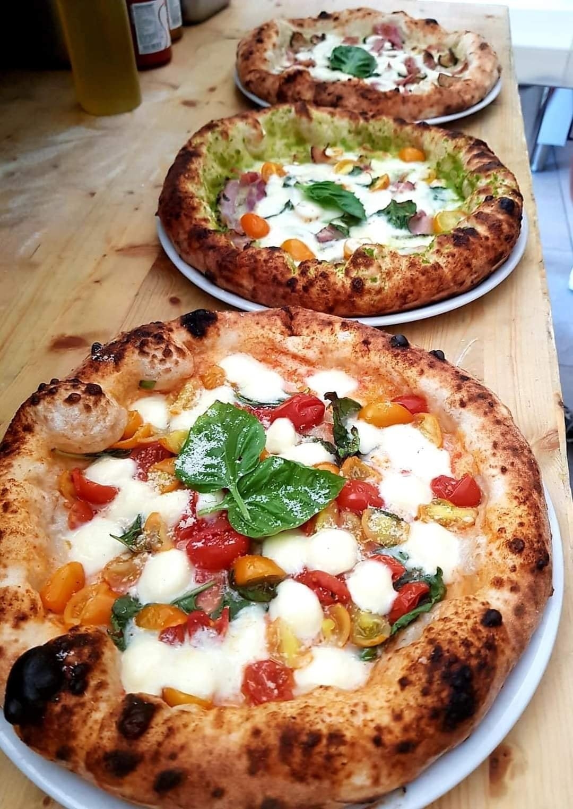

Pizza Recipe
Pizza is a savory dish of Italian origin consisting of a usually round, flattened base of leavened wheat-based dough topped with tomatoes, cheese, and often various other ingredients (such as anchovies, mushrooms, onions, olives, pineapple, meat, etc.) which is then baked at a high temperature, traditionally in a wood-fired oven.
Ingredients:
- 1 pizza dough
- 1 cup pizza sauce
- 2 cups shredded mozzarella cheese
- Assorted toppings (e.g., pepperoni, mushrooms, bell peppers, onions, etc.)
- 1 tablespoon olive oil
- 1 teaspoon dried oregano
- Salt and pepper to taste
Instructions:
- Preheat the oven to 450°F (230°C).
- Roll out the pizza dough on a floured surface to your desired thickness.
- Transfer the dough to a baking sheet or pizza stone.
- Spread the pizza sauce evenly over the dough.
- Sprinkle the shredded mozzarella cheese over the sauce.
- Add your desired toppings.
- Drizzle the olive oil over the toppings.
- Sprinkle the dried oregano, salt, and pepper over the pizza.
- Bake in the preheated oven for 12-15 minutes, or until the crust is golden brown and the cheese is melted and bubbly.
- Remove from the oven and let it cool for a few minutes before slicing and serving.